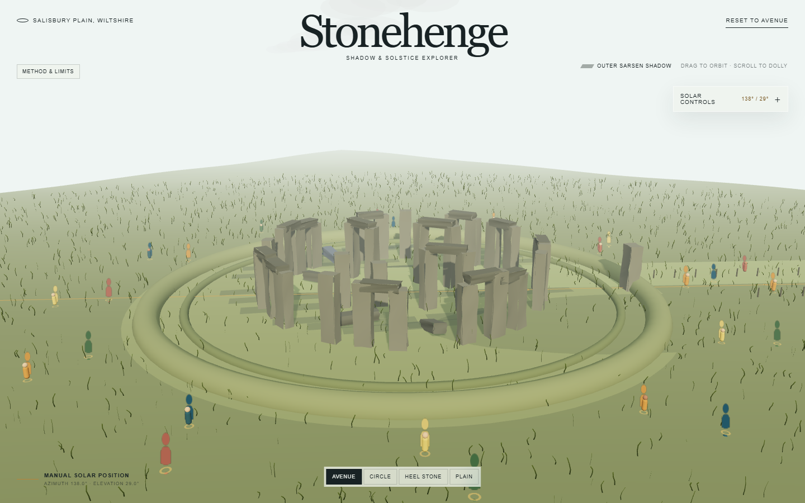
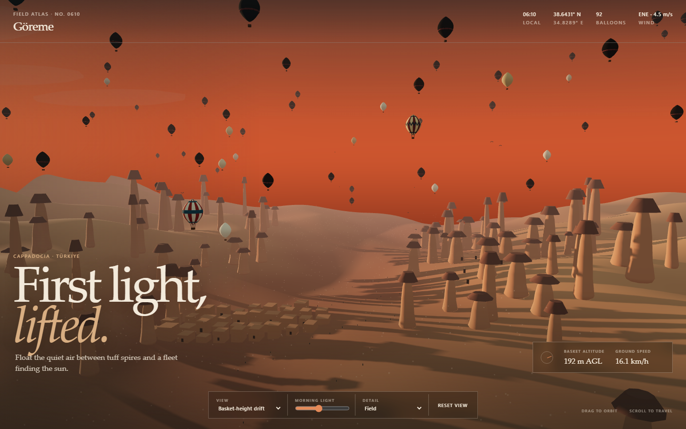

1. The brief
The immediate request was:
“use Claude Code skill /dev-journey to write a development journey html capturing how you reverse engineer the master prompt and individual prompt for each project. Also capture how you revise the two prompts for the balloon and the stonehenge project. the goal is to demystify how the reverse engineering work and what are the meta-patterns that are common across all Peter's prompts. also mention how and if the prompt repository plays a role in the reverse engineered prompts.”
The larger task evolved through several user decisions: read the shared discussion; watch the video end-to-end; create a reverse-engineering report; select the cheapest project to test; use low reasoning; answer the Stonehenge builder's ambiguity questions; add physical law as a non-negotiable; select the second-cheapest project; evaluate both implementations; and revise the prompt system after the renders looked too geometrically simple.
The deliverable is therefore both narrative and technical: readable enough to demystify the reasoning, but precise enough that another analyst could reproduce the method and challenge its inferences.
2. Starting point and cold-start state
Source-video duration. A 1920×1080, 50 fps local audiovisual representation was preserved.
Distinct demonstrated artifacts catalogued: 36 3D/interactive projects plus one animated SVG study.
Public prompts in Peter Gostev's repository snapshot at commit b5b5df94ae9326523d57b70708a81f457e30fac0.
Project entries now explicitly labeled repo-correlated in the completed replication guide. An older front-page sentence said 18; that stale count was corrected during this audit.
The source boundary was deliberately narrow: Peter's video and transcript, Peter's public prompt repository, and the locally generated Stonehenge/Cappadocia implementations. External sources were used later only to check specific realism and correctness claims such as Stonehenge's current lintel count, monument coordinates, and Cappadocia's geological morphology.
Nothing in the video exposed the exact submitted prompts. This single fact governed the entire epistemic design.
3. Chronological reconstruction
Phase 1 — acquire a complete evidence package
The source video, timestamped transcript, metadata, and repository were preserved locally. The original video was retained for fidelity. A 1280×720 H.264 proxy was also produced because decoding the original AV1 stream repeatedly was unnecessarily slow for contact-sheet analysis. Hashes, retrieval state, coverage, and source relationships were recorded in the source manifest.
Phase 2 — watch temporally, not as a slideshow
The video was processed through four synchronized channels: complete audio/transcript, full-duration five-second sampling, targeted full-frame inspection around project boundaries and controls, and repository correlation. Twenty-one contact sheets covered the whole runtime and 38 targeted frames preserved titles, visual systems, UI, and reasoning-level comparisons.
Phase 3 — build the scene inventory before writing prompts
Every demonstrated artifact was assigned a project number, timestamp range, generation regime, evidence class, and observable contract. This prevented visually similar scenes from being conflated and exposed three fundamentally different workflows: multi-hour iterative builds, 20 one-shot Max generations, and reasoning-level reruns. The final gallery was inventoried separately.
Phase 4 — discover invariants
Across scenes, the recurring structure was not a common subject but a common specification grammar: a defining first frame, a whole world around the hero, editorial art direction, visible motion, camera presets, consequential controls, performance tactics, and explicit failure exclusions. Those invariants became the shared master prompt.
Phase 5 — compile one delta per project
Each scene's unique ontology—what exists, how it is arranged, what moves, what the user can change, and what a bad result looks like—became a short project delta. When the repository strongly matched a scene, it supplied explicit language and engineering constraints. Otherwise, the delta was reconstructed only from observable output and narration.
Phase 6 — choose a low-cost falsification test
Stonehenge was selected as the cheapest fast test: a bounded landmark, modest motion, small interface, and little need for large crowds or streaming. Low reasoning was recommended as the cost baseline. The aim was not to assume the prompt worked, but to discover which requirements a coding agent would satisfy cheaply and which it would approximate.
Phase 7 — resolve ambiguity before implementation
The Stonehenge agent asked whether “current monument” implied both present-day and reconstructed modes, and whether modern coordinates/year could drive solstice calculations. The decision was present-day only, no reconstruction mode; use documented monument coordinates and a documented modern reference year, with midsummer sunrise and midwinter sunset presets plus manual azimuth/elevation control. This was a scope decision, not a fact recovered from the video.
Phase 8 — insert physical law as a hard constraint
At the user's request, the shared master gained a non-negotiable physics section covering gravity, structural support, contact, collisions, trajectories, scale, illumination, shadows, and material response. The Stonehenge prompt on disk received this block. The Cappadocia prompt had already been dispatched and retained the earlier master, so the two test conditions were not perfectly matched.
Phase 9 — run a second low-cost project
Cappadocia was chosen second. It is still bounded enough for a one-page Three.js build, but more demanding than Stonehenge because it combines terrain morphology, atmospheric depth, many moving balloons, textile detail, and multiple altitude bands.
Phase 10 — evaluate the actual implementations
Both apps built and ran. Scripted browser checks exercised views, presets, quality controls, reset behavior, and error capture. Screenshots were inspected at wide and close views. Source code was then read to explain the visible result. This source-to-pixel connection mattered: “simple geometry” became a testable diagnosis rather than an aesthetic complaint.
Phase 11 — revise the optimization target
The test falsified an assumption in the initial master. It successfully elicited ambitious feature breadth, but it did not rank visual realism above procedural speed, interaction count, and performance. The revised system therefore moved documentary realism to the top, allowed local licensed PBR/HDR/GLTF assets, prohibited visible primitives for hero objects, replaced a three-motion quota with physically justified motion, and added clay/material/shadow review views.
4. What “watching the video end-to-end” actually meant
It did not mean claiming that a human-like gaze inspected each of roughly 101,000 frames individually. It meant complete temporal and audiovisual coverage using representations suited to different questions.
| Evidence channel | What it answered | Coverage | Known limit |
|---|---|---|---|
| Original video + full audio | Motion, transitions, interaction demonstrations, presenter's judgment and caveats. | Full source acquired; audio full. | Exact private prompts and Arena logs never appear. |
| Timestamped transcript | Project boundaries, one-shot/multi-hour claims, reasoning level, generation-time narration, uncertainty statements. | Full textual track. | Transcript cannot reveal purely visual details. |
| Five-second contact sheets | End-to-end temporal coverage, cuts, scene identity, missed segments. | 21 sheets across full runtime. | A transient state shorter than five seconds can be missed. |
| 38 targeted frames | Interface labels, scene composition, camera modes, specific geometry and comparison states. | Substantial visual inspection. | Still images do not prove runtime correctness. |
| Repository snapshot | Public prompt wording, repeated clauses, technical guardrails, matching scene concepts. | All 63 entries. | Correlation is not proof of verbatim submission. |
5. The actual crux: prompt recovery is an inverse problem
A rendered application is the result of many hidden causes:
visible result = model + reasoning level + system instructions + user prompt
+ scaffolding + libraries + assets + tool calls + prior state
+ random sampling + fixes + runtime environment
Therefore no visual inspection can uniquely recover the original user prompt. Many inputs can produce similar pixels. “Reverse engineering” here means finding the least speculative specification that would plausibly reproduce the observed behavior—not pretending to recover hidden text.
The six-step inversion
- Acquire: preserve every available modality and its provenance.
- Segment: separate projects and generation regimes before comparison.
- Encode: describe every scene with the same observation schema.
- Triangulate: compare visible result, narration, and public repository; preserve disagreement.
- Invert: translate a visible property into the weakest prompt requirement sufficient to request it.
- Falsify: write failure exclusions and acceptance tests so the reconstruction can be proven inadequate.
One concrete example
| Layer | Cappadocia example |
|---|---|
| Observed | Many balloons occupy distinct heights; patterned envelopes, warm valleys, haze and multiple camera altitudes are visible. |
| Narrated | Peter identifies it as one of the one-shot Max projects and comments on the generated result. |
| Repository prompt 26 strongly matches the title and several requested features. | |
| Reconstructed | The delta requests 80–100 balloons, altitude variation, Göreme terrain, four camera views, and explicit exclusions. Exact numbers and clauses are a reproducible specification, not proof of the hidden prompt. |
6. How the shared master prompt was derived
The master was not extracted as a repeated block of text. It was compiled from invariants that recurred across many outputs and, separately, from repeated clauses in the repository. The resulting abstraction was intentionally smaller than the 63-prompt corpus.
| Observed invariant | Why it became shared | Master-prompt clause |
|---|---|---|
| The concept is legible immediately. | Repeated across unrelated subjects; not scenario-specific. | FIRST FRAME: open on the defining spectacle; no splash or empty state. |
| The hero sits inside a larger world. | London, Manhattan, Golden Gate, Rome and even biological scenes use contextual layers. | WORLD: foreground, midground, background, atmosphere, human-scale cues. |
| Motion exists before interaction. | Traffic, water, crowds, animals, clouds and particles recur. | MOTION: visible systems with varied phases, speeds and paths. |
| Camera modes explain scale. | Wide, intimate and impossible views recur across the corpus. | EXPLORATION: orbit/pan/zoom or first-person plus named presets and reset. |
| Controls alter the world. | Time, era, weather, density or mode controls have visible consequences. | UI: few compact controls, each reversible and consequential. |
| High ambition is paired with browser engineering. | Repository prompts frequently demand instancing, LOD and bounded pixel ratio. | TECHNICAL CONTRACT: pinned Three.js, instancing, pooling, LOD, disposal, graceful quality reduction. |
| Peter's prompts name bad results. | Negative examples occur in 48 of 63 repository prompts. | ACCEPTANCE: explicit failure modes and runnable local result. |
Version history
| Version | Optimization target | Important language | What the test revealed |
|---|---|---|---|
| Hidden original | Unknown. | Not visible in the video. | Cannot be recovered exactly. |
| Reconstructed v1 | Peter-style benchmark: ambition, completeness, interaction, motion, performance. | “Prefer procedural geometry … restrained stylization”; “at least three independent visible systems”; “avoid external models and images.” | Strong feature coverage, weak photorealistic hero fidelity. |
| v1.1 physics amendment | Prevent physically impossible motion, support, lighting and intersections. | “Laws of physics must be obeyed … use a conservative physically plausible approximation and disclose the approximation.” | Physics language does not create geometric or material realism by itself. |
| Production v2 | Correctness and documentary visual realism before breadth. | Photorealism highest priority; assets allowed; no visible primitives for hero subjects; PBR detail bands; reference/clay/material/shadow/final views. | Recommended replacement after evaluation; not the prompt under which the original two screenshots were generated. |
The complete benchmark-style v1 master is preserved in the replication guide. The production v2 logic is summarized here because its purpose is different: it is not a faithful imitation of Peter's stylized benchmark grammar; it is a correction for the user's stated realism objective.
7. How each individual prompt was produced
Each project delta was compiled from the same six slots. This made the prompts comparable without forcing every scene into identical content.
- Thesis: one sentence describing the singular spectacle.
- Scene ontology: hero, terrain/context, supporting entities, atmosphere and human-scale cues.
- Spatial semantics: where things belong, their scale, ordering, relationships and exclusions.
- Behavior: what moves, changes or reacts and why.
- Camera and controls: the authored views and user-visible state changes.
- Collapse modes: the tempting cheap approximations the model must avoid.
The appendix documents the derivation basis for all 37 entries. The exact copyable deltas and multi-hour workflows live in the main report and the canonical prompt guide.
8. How—and how not—the prompt repository played a role
| Role | Used? | What it legitimately supports |
|---|---|---|
| Scene matching | Yes | Title-and-feature matches such as Cappadocia ↔ prompt 26 and Stonehenge ↔ prompt 27 increase confidence that the public corpus belongs to the same design lineage. |
| Vocabulary recovery | Yes | Repeated language around first frame, whole-world scale, camera presets, failure exclusions, instancing, LOD and performance informed the shared grammar. |
| Mechanical pattern counts | Yes | Counts across all 63 prompts established that several apparent patterns were corpus-wide rather than cherry-picked impressions. |
| Exact hidden prompt transcript | No | The video never displays prompt text, and repository publication does not prove what was submitted in Arena. |
| Complete coverage of the video | No | Several visible projects have no exact repository counterpart; those remained reconstructed. |
| Proof of causality | No | A recurring clause and a good output can correlate without proving that clause caused the quality. |
The snapshot contains 63 prompts. A mechanical keyword scan found: Three.js in 62; first-frame instructions in 36; negative constraints in 48; procedural generation in 48; instancing in 58; LOD in 39; camera presets/modes in 49; performance targets in 50; visible motion in 51; compact/minimal UI in 49; and acceptance/guardrail language in 24. Prompt length ranged from 81 to 1,825 words, with a median of 484.
These are keyword-based lower bounds. They describe the text corpus; they do not prove causal effectiveness. Synonyms can produce false negatives, and a keyword can appear without being operationally important.
9. Meta-patterns supported across Peter's prompts
1. One coherent impossibility
The prompts often ask for an experience that feels impossibly complete—an entire island, city, ecosystem or historical transformation—but pair it with concrete representations such as instancing, LOD and procedural families.
2. First frame as contract
The opening image must communicate subject, scale and mood without interaction. This forces composition into the specification instead of leaving it to chance.
3. World before widget
The central monument or object is never enough. Terrain, adjacent structures, circulation, weather, life and horizon establish believable scale.
4. Scale needs multiple representations
Far silhouettes, mid-scale families and near hero detail are different data problems. Peter's prompts repeatedly use LOD or equivalent strategies to preserve both extent and inspection.
5. “Alive” is decomposed
Motion is divided into independent systems with different paths and phases. The good idea is decomposition; the original master over-literalized it into a fixed quota.
6. Cameras are explanations
Named views are not navigation garnish. They reveal the evidence needed to understand scale, mechanism, interior, context or comparison.
7. Controls must change meaning
Time, weather, density, era and simulation-state controls expose the model of the world. Decorative sliders are rejected.
8. Interface and world share an art direction
Typography, palette, spacing and panel opacity are part of the scene's authorship, not a generic dashboard pasted over it.
9. Negative constraints encode taste
“Do not make X” clauses identify cheap local optima: an isolated hero, a flat plane, identical clones, global fog, synchronized motion or UI obstruction.
10. Graceful degradation protects the thesis
Quality changes should remove distant density, reflections or secondary effects before damaging the hero silhouette or world completeness.
11. Benchmark and production are different modes
A one-shot prompt tests a model. A production workflow uses references, asset provenance, iteration, deterministic capture and domain review. Confusing them produced the realism mismatch.
12. Reasoning level is a variable, not a virtue
The video itself does not establish that the highest reasoning level always wins. Cost, variance and defect type should determine escalation.
Claims the evidence does not support
- Longer prompts are inherently better.
- “Billion-piece” or “maximum ambition” is a magic quality switch.
- One attractive one-shot is reproducible across seeds.
- Visual plausibility establishes historical, geographic, biological or physical accuracy.
- More moving objects imply a better simulation.
- Peter's web-3D pattern transfers unchanged to CAD, scientific simulation, VR training or production games.
10. How Stonehenge and Cappadocia changed the prompts


Evidence-backed diagnosis
| Symptom | Implementation evidence at evaluation time | Prompt cause | Revision |
|---|---|---|---|
| Stonehenge stones read as softened boxes. | roughBox() began with BoxGeometry; main materials were uniform colors with roughness values. | The prompt asked for procedural geometry and “irregular weathering” but did not specify mesh/sculpt/scan quality, texel density or material maps. | Require unique near-field silhouettes, erosion, lichen, pits, mortise/tenon detail and scanned or subdivided/displaced hero meshes. |
| Earthworks read as graphic rings. | The implementation used TorusGeometry for bank and ditch. | “Earthwork rings” named content but not morphology or prohibited primitive expression. | Specify low, irregular, discontinuous terrain relief integrated into the grass; prohibit a visible torus. |
| Stonehenge history was over-completed. | The generated outer structure included more lintels than present-day evidence supports. | “Open on the complete monument” conflicted with “current monument”; the word complete invited reconstruction. | Say present-day only and explicitly preserve the current six surviving outer sarsen lintels. |
| Displayed solar state and shadow model disagreed. | The UI could show −0.8° elevation while shadow construction clamped the calculation to +1.4°. | The physics amendment was broad but lacked a consistency acceptance test. | Require one sun vector for displayed azimuth/elevation, lighting and shadow geometry; disclose below-horizon behavior. |
| Cappadocia terrain looked like repeated cones on a plane. | The evaluated build used one height-deformed plane and many low-segment lathed chimney profiles. | The negative constraint existed, but no minimum terrain-family or near-field uniqueness contract made it expensive to violate. | Require connected erosion-sculpted ridges and multiple formation families, with unique hero/mid silhouettes and terrain continuity tests. |
| Caves looked applied rather than excavated. | Cave mouths were represented as dark flat surfaces rather than cavities with wall thickness and parallax. | “Visible cave dwellings” specified presence, not geometric evidence. | Require recessed cavities, parallax/displacement or actual interior depth, with entrances integrated into tuff formations. |
| Balloons were numerous but materially simple. | Envelopes were lathed forms with mostly graphic canvas patterns; baskets and hardware were simple boxes/lines. | The master rewarded count, motion and procedural efficiency before close-pass fidelity. | Define cloth panels, seams, weave, translucency, mouth rigging, burner hardware, ropes and wicker for hero balloons; use cheaper LODs only at distance. |
The central prompt-design correction
The original master optimized a multi-objective bundle without a clear priority order. Coding agents rationally spent effort on feature breadth: three motions, several camera modes, controls, quality settings, procedural density and broad browser compatibility. Photorealism was only implied—and “restrained stylization” explicitly pointed elsewhere.
Old priority (implicit): ambition ≈ breadth ≈ interaction ≈ motion ≈ performance ≈ appearance Revised priority (explicit): 1. factual and physical correctness 2. documentary visual realism of hero subject and defining landscape 3. coherent lighting/material response 4. interaction and motion 5. performance and world breadth 6. decorative UI
Physics and realism were separated. Physics asks whether motion, support, light and cause are coherent. Visual realism asks whether geometry, surface microstructure, material response, scale, light transport and atmospheric depth resemble the subject. A physically plausible low-poly box remains a low-poly box.
Revised Stonehenge project delta
Create a documentary-realistic, present-day Stonehenge shadow-and-solstice explorer on Salisbury Plain. Use the monument location at approximately 51.179° N, 1.825° W and state the modern reference year used for solar calculations. Model the surviving present-day arrangement rather than a reconstructed perfect ring: preserve the current six outer sarsen lintels, fallen and leaning stones, gaps, individual asymmetry, tool/erosion marks, lichen, pits, root staining, and visible mortise-and-tenon evidence where appropriate. Hero stones must not read as transformed boxes. Use scanned/high-resolution local meshes when licensing permits, or deeply subdivided and displaced unique meshes with no repeated near-field silhouette. Give sarsen and bluestone distinct physically based materials with albedo, roughness, normal and ambient-occlusion detail at close-inspection texel density. Form the ditch, bank and Avenue as low, irregular, weathered terrain relief continuous with the grass field; never use visible torus rings. Add plausible drainage, worn paths, fencing and sparse visitors as scale cues. Grass motion follows one documented wind field. Compute midsummer sunrise and midwinter sunset from the documented location/year. Use one consistent sun vector for the UI readout, sun disc, directional illumination and computed shadow. Do not clamp the shadow to a different elevation than the displayed sun. When the solar disc is below the geometric horizon, report that state and do not invent a daylight shadow. Allow manual azimuth/elevation override and label it manual. Open on a reference-matched Avenue view, then provide circle, Heel Stone, midsummer and midwinter cameras. Include reference, clay, material-debug, shadow-debug and final PBR review states. Pass both a wide composition and a stone-surface close-up before adding secondary animation or decorative interface.
Revised Cappadocia project delta
Create a documentary-realistic Cappadocia balloon flight at 06:10 sunrise over Göreme. The defining landscape is a connected, erosion-sculpted tuff system—not isolated cones on a flat plane. Build branching valleys, ridges, aprons, gullies, pinnacles, mushroom-cap chimneys, clustered columns and cave-cut settlement as multiple geological families. Near and midground formations must have unique silhouettes, stratified erosion and non-repeating surface breakup. Use physically based layered-tuff materials with albedo, roughness, normal, ambient-occlusion and selective displacement detail. Cave dwellings must read as excavated cavities with recess, wall thickness and parallax/interior darkness; do not paste black planes onto the rock. Add roads, orchards, villages and sparse ground crews only where spatially plausible. Stage 80–100 balloons across distance and altitude using real hot-air-balloon proportions and a shared wind field whose velocity varies smoothly with altitude. Prevent collisions and terrain penetration. Hero balloons for basket-height and close-pass cameras require individual fabric panels, seams, subtle weave, transmitted dawn light, mouth structure, suspension cables, burner frame/hardware, tanks and woven basket detail. Distant balloons may use progressively cheaper LODs without changing their silhouettes abruptly. Use a physically plausible dawn sun, HDR-derived or locally generated environment illumination, aerial perspective and long shadows. Shadow sides of balloons and terrain must retain readable bounced/environment light rather than collapsing to black. Dust and haze follow terrain and wind; they are not full-screen fog. Provide valley-floor, basket-height drift, high-fleet and close-pass cameras. Include reference, clay, material-debug, shadow-debug and final PBR review states. The acceptance gate includes a wide valley frame, a terrain close-up, a cave close-up and a hero-balloon close pass. Remove secondary UI, motion or distant balloon count before compromising those four views.
11. Tools, features and agents used
| Tool or feature | Why it was chosen | What it produced | Limit |
|---|---|---|---|
| Video/transcript acquisition | Preserve a complete, timestamp-addressable source rather than rely on memory or a summary. | Original video, metadata and transcript with hashes. | Does not expose hidden prompts. |
| H.264 analysis proxy + frame extraction | Make temporal review fast and deterministic while retaining the original. | 21 five-second contact sheets and 38 targeted frames. | Five-second sampling can miss brief states. |
| Public Git repository snapshot | Inspect Peter's own prompt corpus at a fixed revision. | 63-entry local corpus at a recorded commit. | Publication and submission are different events. |
| Text/code search and structured counts | Test whether candidate patterns recur across the whole corpus and locate implementation choices. | Pattern frequencies and source-line evidence. | Keyword methods undercount synonyms and do not prove causality. |
| Browser/runtime automation | Run both apps at a fixed viewport, exercise controls, capture console/page errors and save comparable views. | Four evaluation screenshots and interaction evidence. | Headless GPU timing was not representative. |
| Direct source inspection | Explain why a visible artifact looked simple or inconsistent. | Connections from pixels to primitives, materials, terrain generation and solar logic. | Code says what was implemented, not what Peter originally intended. |
| Separate coding agents | The user dispatched Stonehenge and Cappadocia as independent build tasks from the reconstructed prompts. | Two runnable local projects. | Those agents' full private reasoning is not part of this task transcript. |
/dev-journey skill | Require a chronological, auditable, warts-and-all retrospective rather than a sanitized summary. | This HTML. | The past is reconstructed from surviving evidence; no event can be invented to fill gaps. |
No subagent was delegated to write this journey. The reconstruction and artifact authoring were performed inline. The two application builders were separate user-launched coding tasks, not hidden participants in this report-writing step.
12. What went wrong, near misses, and fixes
| Failure or near miss | Evidence / exact error where retained | Fix and lesson |
|---|---|---|
| Original AV1 contact-sheet pass was too slow and incomplete. | Only a partial set was produced on the first pass. | Create a 720p H.264 analysis proxy, preserve the original, then regenerate the complete 21-sheet set. Analysis representations should be optimized separately from archival representations. |
| A PowerShell counting expression was malformed. | ParserError … An empty pipe element is not allowed. | Break the expression into named variables and validate output before using it. Compact shell one-liners are not evidence if they do not execute. |
| A browser accessibility-tree read returned an unchanged-state error. | Cannot read properties of undefined (reading 'slice') | Use a fresh snapshot/screenshot rather than slicing absent tree output. |
Local file:/// navigation was blocked in one browser path. | The browser surface rejected that navigation mode. | Serve the static artifact over a verified localhost address for visual review; keep the final artifact fully offline-capable. |
| Port reuse nearly routed the evaluator to the wrong app. | The first run waited for #scene and timed out while Vite had auto-selected a different port: Locator.bounding_box: Timeout 30000ms exceeded … waiting for locator("#scene"). | Bind and verify an explicit port, confirm page title/URL before capture, and treat a screenshot without identity checks as potentially misattributed. |
| Headless animation timing hung or throttled. | requestAnimationFrame-based sampling did not produce a trustworthy frame-rate measurement under the headless/SwiftShader environment. | Report that frame rate was not measured. Do not convert an unrepresentative headless number into a performance claim. |
| Both production builds emitted large-chunk warnings. | Vite warned about chunks larger than 500 kB. | Record as an optimization issue, not a functional failure. Bundle size and render realism are separate evaluation axes. |
| Repository-correlation count drifted. | The front page said 18 while the completed guide contained 21 Repo-correlated labels. | Recount from the canonical guide and update the stale summary. Derived counts should be generated or regression-checked. |
| The first master prompt optimized the wrong bundle. | Both outputs passed many functional tests but failed the user's realism expectation. | Add explicit objective ordering and multi-view visual gates. A prompt can be internally successful and externally wrong. |
13. Verification performed—and not performed
Verified
- The source package includes the original video, analysis proxy, transcript, repository snapshot, hashes, 21 contact sheets and 38 targeted frames.
- The inventory contains 36 3D/interactive projects plus one SVG study, split into the generation regimes Peter narrates.
- The repository snapshot contains 63 prompt entries; the stated keyword counts were mechanically derived.
- Both initial local apps built and rendered without captured console/page errors during the evaluation run.
- Stonehenge presets and reset changed the rendered state; Cappadocia camera/quality/reset controls changed the rendered state.
- Source inspection supports the geometric and solar-consistency diagnoses recorded above.
- The resulting HTML uses only local assets, has a restrictive content-security policy, semantic headings, keyboard-native navigation, responsive layout and print styles.
Not verified
- The exact text Peter submitted, system instructions, random seeds, hidden scaffolds, corrections or Arena execution logs.
- Run-to-run reproducibility of any one-shot demonstration.
- Historical, geographic, biological and scientific accuracy for all 37 scenes.
- Representative frame rate on the user's physical GPU.
- The later Cappadocia source revision visible on disk after the recorded evaluation screenshots.
- Whether production v2 alone, without curated assets or iteration, will achieve the requested photorealism.
14. Where things stand
- Complete: end-to-end source package, scene inventory, benchmark-style master prompt, 37 project deltas/workflows, meta-pattern analysis, unknown-unknowns register, two initial implementations, evidence-backed evaluation, physics amendment, and proposed realism-first revisions.
- Complete in this artifact: chronological reconstruction, repository-role audit, derivation method for each project, explicit failure record, and the revised Stonehenge/Cappadocia deltas.
- Open: synchronize the production v2 master into a standalone canonical prompt file and dispatch clean rebuilds if desired.
- Open: re-evaluate the later Cappadocia revision separately rather than assuming the old screenshots describe the current code.
- Open: perform fixed-seed repeat trials across reasoning levels if the goal shifts from demonstration replication to causal model evaluation.
Recommended next experiment
Do a paired Stonehenge rebuild at the same viewport and model settings: one run with the old benchmark master, one with the realism-first production master plus a small, licensed reference/asset pack. Use identical camera shots and blind-rate silhouette fidelity, microgeometry, material response, lighting coherence, factual layout, interaction, frame time and bundle size. That separates prompt effect from model/seed variance and, crucially, tests whether the missing realism is linguistic or asset-bound.
Appendix — derivation register for all 37 projects
This table documents how the individual specification was formed. It does not repeat the full prompt text; the copyable versions remain in the replication guide.
| # | Project | Regime / evidence basis | What the delta or workflow isolated |
|---|---|---|---|
| 1 | London Through Time | Observed Narrated multi-hour | Canonical geography shared by nine eras; era data layers; preserved camera; transition architecture; historical review and OSM attribution. |
| 2 | D-Day / Omaha Beach | Observed Narrated multi-hour | Blender-to-glTF asset bible, surf/terrain/runtime separation, crowd flow fields, timeline phases and non-glamorizing documentary framing. |
| 3 | PALIMPSEST / The Fallen Coast | Observed Narrated multi-hour | First-person vertical slice, three regions, data-driven content, locomotion/combat/puzzle loop, playtime instrumentation rather than an unverified “ten hours.” |
| 4 | Golden Gate Bridge | Full span and bay context, cable/bridge proportions, height-based fog, traffic/boats, cameras and the exclusion of two towers in generic water. | |
| 5 | Cappadocia Balloons | 06:10 dawn, balloon count/altitude variation, Göreme morphology, haze/crews, flight cameras and anti-clone/anti-cone constraints. | |
| 6 | Stonehenge | Present-day arrangement, solar/shadow controls, Avenue view, earthworks/visitors and an explicit ban on a reconstructed perfect ring. | |
| 7 | Neuschwanstein | Reconstructed | Recognizable alpine castle massing, mountain/forest context, bridge and season/light cameras; no exact repository counterpart. |
| 8 | Giant Pacific Octopus | Reconstructed | Underwater anatomy, arm locomotion, suckers, camouflage, den ecology and camera distances derived from the visible biological scene. |
| 9 | Formula 1 | Reconstructed | Track/car spectacle, race systems, speed cues, broadcast/onboard cameras and mechanically coherent vehicle motion. |
| 10 | X-Ray Cabinet | Reconstructed | Dark medical/editorial display, layered anatomy or scanned-object reveal, exposure/slice controls and a non-diagnostic caveat. |
| 11 | Brooks Falls | Waterfall hydrodynamics, salmon runs, bears with independent behavior, cameras and ecological rather than synchronized motion. | |
| 12 | Inside a Leaf | Reconstructed | Cross-scale biological journey through cuticle, stomata, cells and transport, with scale-appropriate representations and uncertainty. |
| 13 | Building the Great Pyramid | Construction staging, labor/logistics, blocks/ramps/cameras and a distinction between process reconstruction and finished-Giza alternative. | |
| 14 | Monet's Water Lilies | A world made from brush dabs rather than a normal pond with a post-process filter; palette recomposition across light states. | |
| 15 | Van Gogh's Town | Reconstructed | Multiple paintings unified into one navigable town, directional impasto logic, color rhythm and a coherent camera journey. |
| 16 | One Riverbank, 2,000 Years | One stable location transformed across eras, spatial correspondences, time controls and continuity rather than unrelated dioramas. | |
| 17 | Tower of Babel | Monumental spiraling construction world, dense labor/material systems, height cameras and legible structural support. | |
| 18 | A Garden in the Rain | Layered rainfall, wet material response, foliage movement, puddles/drainage and controls whose states alter the garden. | |
| 19 | Manhattan | Entire-island first frame, continuous multiscale zoom, true macro-geography, city life and nested LOD rather than a skyline slab. | |
| 20 | Demolition Playground | Destruction, debris and tool interactions with support/collision rules and reversible/resettable experimentation. | |
| 21 | Istanbul | Bosphorus-centered world, layered skyline/minarets, ferries, neighborhoods, bridge/shore cameras and cross-continent scale. | |
| 22 | Humpback Whale | Reconstructed | Ocean scale, whale anatomy and motion, surface/underwater cameras, bubble/particle behavior and biological uncertainty. |
| 23 | Swiss Alpine Trail | Research-dependent | Trail-scale navigation, topography, vegetation/elevation bands, weather and geographic details that require external verification. |
| 24 | PAVO Peacock SVG | Reconstructed SVG | Vector anatomy, feather hierarchy, coordinated display animation and graphic composition; intentionally excluded from the 36-project 3D count. |
| 25 | Ancient Rome / Colosseum | Six levels | A constant specification rerun across reasoning levels; city/Colosseum scope, voxels/instancing and controlled comparison criteria. |
| 26 | Sagrada Família | Reconstructed Six levels | Recognizable exterior/interior massing, Barcelona context, camera parity and a six-level evaluation beyond screenshot richness. |
| 27 | Paris | Eiffel-centered but city-scale scene, Seine/bridges/avenues, close and wide inspection, traffic and progressive LOD. | |
| 28 | Westminster | Reconstructed | Palace/clock-tower silhouette, Thames/bridge context, traffic/boats/crowds and London editorial framing. |
| 29 | Washington / White House | Reconstructed | White House/grounds, axial urban context, scale cues and cameras; no matching public entry was treated as exact. |
| 30 | Lost Valley | Enclosed fantasy-valley geography, monumental discovery, atmospheric depth, traversal and controlled mystery. | |
| 31 | Chocolate Garden / Cacao Conservatory | Botanical-confection ontology, material contrast, walk-through cameras, growth/production details and themed UI. | |
| 32 | Emerald City | Green crystalline skyline, road/landscape approach, glow/reflection, city context and a non-generic fantasy silhouette. | |
| 33 | Floating Mountains | Related repo 30 only | Levitation, atmospheric depth, waterfalls/vegetation and physically declared fantasy rules; the related repository entry was not elevated to an exact match. |
| 34 | Pileh Lagoon | Enclosed karst lagoon, water/boat life, cliffs and depth/shore cameras with tropical material/light language. | |
| 35 | Grand Budapest | Symmetrical hotel/set spectacle, mountain context, miniature-film palette, interiors/cameras and controlled animation. | |
| 36 | Forbidden City | Axial palace hierarchy, courtyards/roofs, crowds/flags, whole-complex scale and progressive representation. | |
| 37 | Atlantis | Underwater city hierarchy, water/caustics/life, monumental reveal, exploration and fantasy rules kept internally coherent. |
Sources and provenance
- Arena AI / Peter Gostev, “GPT-6-Astra | First impressions”, 33:49.8.
- Source manifest: representations, hashes, coverage and repository commit.
- Primary visual reverse-engineering report.
- Canonical prompt and workflow guide.
- Method, meta-pattern and unknown-unknowns playbook.
- Frame-evidence index.
projects/stonehengeandprojects/cappadocia: sanitized implementation snapshots inspected for the evaluation and public release.